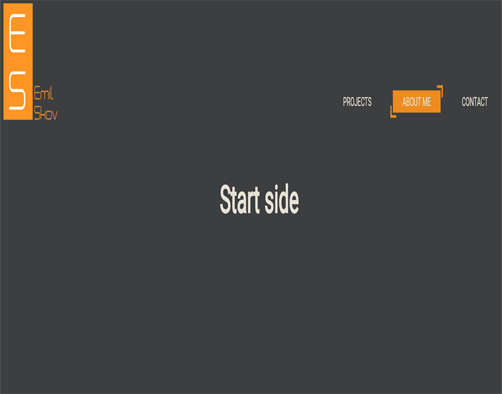

Make my Portfolio
School project
Now it's time to implement a working online version of your portfolio in the form of a website that you develop from scratch using HTML 5 and CSS 3. Use your prototype as a presentation - maybe you get close to the first draft, maybe Does your project take a new and unexpected creative direction?
You must produce an online version and document your code and project structure at GitHub. We expect:
online version of your portfolio on your webhotel (not via GitHub pages ;-))
a repository for your portfolio project
An appropriate project structure (file names, folders)
error code (validated!)
In addition to the technical implementation, it is important that you relate to the following when designing your new website:
Who should see my portfolio - who am I referring to?
How do I present myself best?
How do I convey what I have learned so far and what I hope to learn in the future?
What visual style and mood do I wish for my portfolio?
How can I give my portfolio a personal touch?